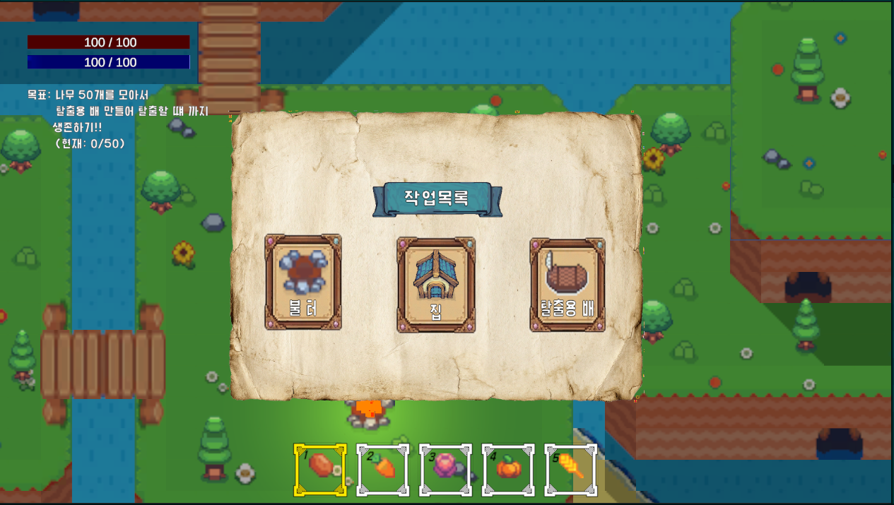
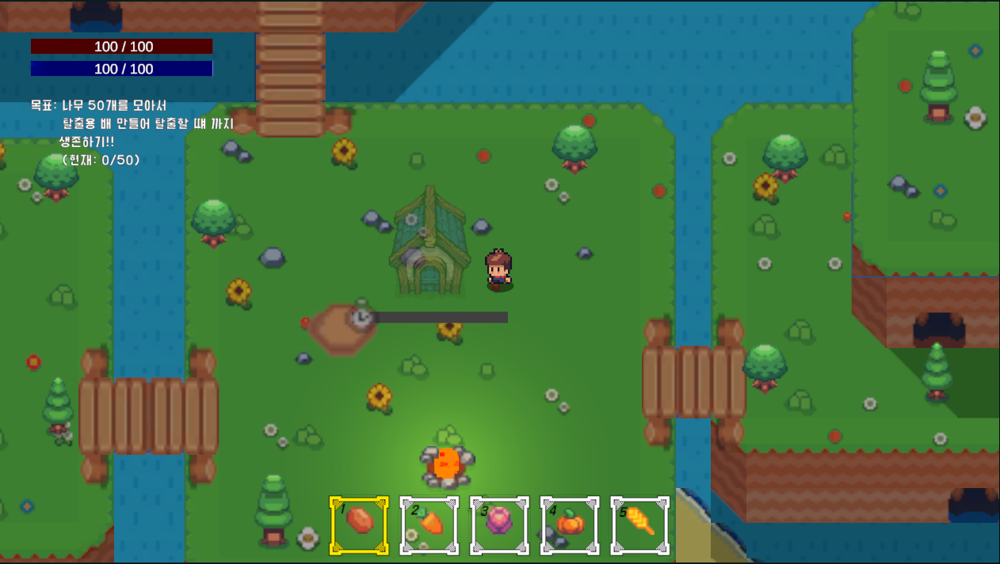
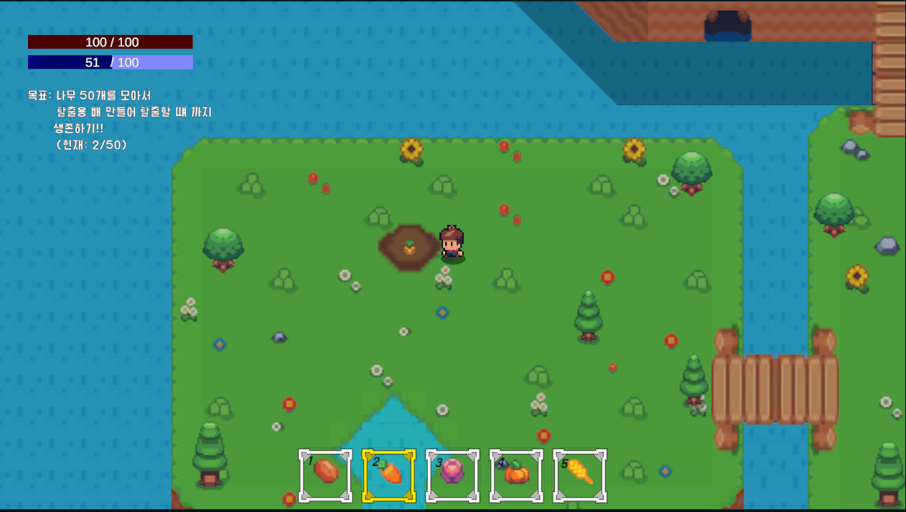
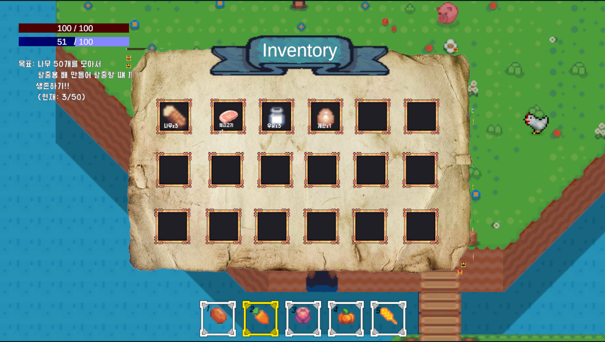

Sunnyside Island





프로젝트 소개
Sunnyside Island는 불의의 사고로 외딴 섬에 갇힌 플레이어가 생존하며 탈출을 준비하는 2D 생존 생활 게임입니다.
플레이어는 섬에서 나무와 식량을 모으고, 농사와 건축을 활용해 버티면서 나무 50개를 모아 탈출용 배를 제작하고 섬을 떠나는 것을 목표로 합니다.
주요 기능
게임 내 시간과 날짜 변화 이벤트를 기반으로 작물 성장, 건축 진행도, 나무 재생 같은 하루 단위 시스템을 관리했습니다.
작물마다 서로 다른 성장 일수를 설정하고, 성장 진행도에 따라 단계별 스프라이트가 바뀌도록 구성했습니다.
건축물 배치 시 프리뷰 색상으로 건축 가능한 위치와 불가능한 위치를 구분하고, 타일맵/바다/나무/기존 건축물/플레이어 거리 조건을 검사했습니다.
나무 벌목 후 일정 날짜가 지나면 다시 생성되도록 만들고, 재생 위치가 다른 오브젝트나 모닥불과 겹치지 않도록 검사했습니다.
나무 50개를 재료로 탈출용 배를 제작하고, 완성된 배와 상호작용하면 엔딩 씬으로 이동하는 탈출 루프를 구현했습니다.
사용 기술
개발 포인트
작물별로 서로 다른 성장 시간을 설정하고, 물을 준 날에만 성장 일수가 누적되도록 만들어 농사 진행이 시간 시스템과 연결되게 했습니다.
건축물 프리뷰를 사용해 배치 가능한 곳은 초록색, 불가능한 곳은 빨간색으로 표시했습니다. 배치 검사에는 타일맵, 바다 타일, 나무 레이어, 건축물 레이어, 플레이어와의 거리 조건을 함께 사용했습니다.
건축 요청 이후 플레이어가 건축 위치 근처로 이동하고 망치 애니메이션을 재생한 뒤 실제 건축을 확정하는 흐름을 만들었습니다.
ISaveable 인터페이스와 JSON 저장 시스템을 통해 시간, 작물, 건축물, 생존 수치 같은 여러 시스템의 상태를 저장하고 불러오도록 구성했습니다.
인벤토리 시스템을 IInventorySystem 인터페이스로 분리하고, 농사 수확, 아이템 줍기, 제작, 건축 시스템이 동일한 AddItem/RemoveItem/CountItem API를 사용하도록 구성했습니다. 이를 통해 나무 수집부터 탈출용 배 제작까지 이어지는 자원 흐름을 하나의 구조로 관리했습니다.
배운 점
생존, 농사, 건축, 세이브처럼 서로 연결되는 시스템이 많을수록 EventBus와 데이터 클래스를 통해 책임을 나누는 것이 중요하다는 점을 배웠습니다.
직접 만든 DI 컨테이너로 Inventory, Pool, Building, Farming 시스템의 의존성을 주입하면서, 매니저 간 직접 참조를 줄이고 시스템을 분리하는 방법을 경험했습니다.
Unity에서는 DI만으로 모든 참조를 처리하기 어렵기 때문에 SerializeField, 씬 오브젝트 검색, Resources 로드와 DI를 상황에 맞게 조합해야 한다는 점을 배웠습니다.